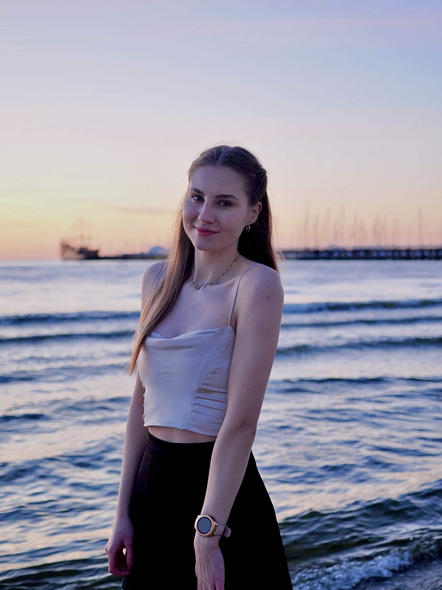

<div class="about-container">
  <div class="container">

    <div class="departemnts-text">
      <p class="text-our">O mnie</p>
      <p class="text-what">Tak właściwie, to jestem tylko ja - <span class="name">Dorota</span></p>
      <div class="line-dec"></div>
    </div>
    <div class="column">
      <div class="photo"></div>
      <div class="text">
        <p class="bold-text"><span class="name"></span></p>
        <p>Cześć.</p><p>Po krótce, jestem dziewczyną, która kocha weterynarie, jednak życie pokazało mi inną ścieżkę i niestety nie
          udało się być na danych studiach. Na codzień uczę się o dietetyce zwierzęcej
          (głównie kociej) oraz o behawioryźmie. Jestem właścicielką dwóch kotów begnalski odmiany Snow Lynx oraz
          prowadze wraz z rodzicami hodowle owczarków staroniemieckich.</p>
        <p>
          Poza weterynarią, zajmuję się również programowaniem. Jestem Front End Developerem oraz UX UI Desingnerem.
        </p>
        <p>
          W wolnej chwili zajmuję się motoryzacją. Uwielbiam adrenalinę i moc przyśpieszenia. 300 konne autko pozwala na
          wiele, jednak wiadomo, zawsze za mało tych koni.
          Dodotkowo tworze grafiki na bluzy i koszulki, ewetualnie loga dla firm.
        </p>
        <p>
          :)

        </p>
        <div class="links">
          <a href="https://www.linkedin.com/in/ewelina-broszko-8707bb221/" class="link"><p>Linkedin</p></a>
          <a href="https://github.com/Ewelina-Dorota-Broszko" class="link"><p>GitHub</p></a>
          <a href="https://www.instagram.com/star_of_a_dark_artist/" class="link"><p>Instagram</p></a>
        </div>
      </div>
    </div>
  </div>
</div>